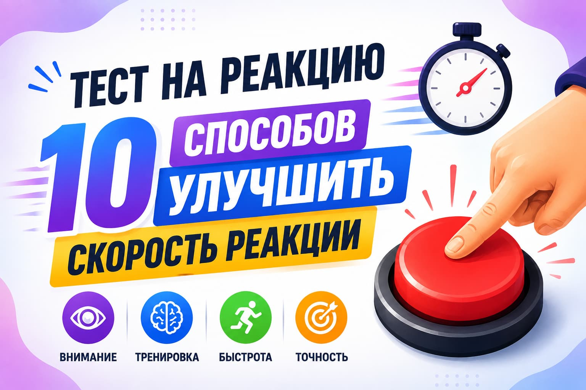
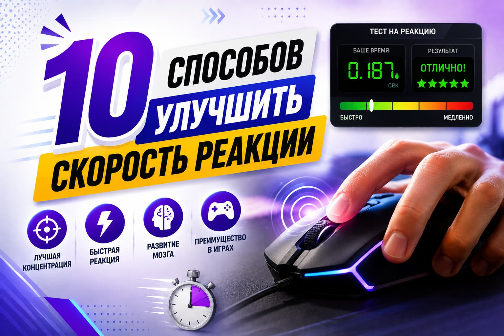

Тест на реакцию: 10 способов улучшить скорость реакции

Тест на реакцию помогает узнать, насколько быстро вы замечаете сигнал и отвечаете на него. Если вам кажется, что вы реагируете медленно, не стоит сразу переживать. Скорость реакции можно улучшить с помощью простых привычек и регулярных тренировок. Она важна не только в играх и спорте, но и в обычной жизни. Во время тренировки тест на реакцию помогает следить за своими результатами и видеть изменения. В этой статье мы разберём 10 простых способов, которые помогут улучшить реакцию, внимание и скорость ответа.
Что такое время реакции?
Время реакции — это то, сколько времени человеку нужно, чтобы ответить на какой-либо сигнал. Например, вы видите цвет на экране и нажимаете на кнопку. Сначала глаза замечают сигнал, потом мозг его обрабатывает и даёт команду руке. Чем быстрее это происходит, тем лучше скорость реакции. Мы постоянно реагируем на звуки, свет, движение и другие сигналы. Хорошая реакция может быть полезна в играх, спорте, за рулём и в обычных ситуациях.
Почему важно иметь хорошую реакцию?
Хорошая реакция помогает быстрее отвечать на то, что происходит вокруг. Она может быть полезна в самых разных ситуациях. Например, водителю нужно быстро заметить препятствие и нажать на тормоз. В спорте важно вовремя увидеть движение соперника и ответить на него. В играх быстрая реакция помогает быстрее нажимать на нужную кнопку и действовать в нужный момент. Но реакция важна не только для спорта и игр. Она нужна и в обычной жизни, когда приходится быстро заметить сигнал и принять решение.
10 способов улучшить скорость реакции

1. Правильно питайтесь
Питание важно для работы мозга и всего организма. Старайтесь есть овощи, фрукты, орехи и другие полезные продукты. Разнообразная еда помогает получать нужные вещества и сохранять энергию в течение дня. Когда вы чувствуете себя бодрее, вам легче сохранять внимание и быстро отвечать на сигналы. Поэтому полезное питание может быть хорошей частью тренировки реакции. Также полезно придерживаться регулярного режима питания.
2. Играйте в видеоигры
Некоторые видеоигры требуют быстрых движений и решений. Во время игры нужно следить за экраном, замечать изменения и вовремя нажимать нужные кнопки. Это помогает тренировать внимание и координацию рук и глаз. Игры также учат быстро выбирать действие в нужный момент. Лучше выбирать игры, которые требуют внимания и быстрых действий, а не просто смотреть на экран.
3. Уменьшите отвлекающие факторы
Шум, телефон, разговоры и другие вещи могут мешать сосредоточиться. Когда внимание постоянно переключается, бывает сложнее быстро заметить нужный сигнал. Постарайтесь убрать лишние звуки и уведомления, если вам нужно хорошо сосредоточиться. Спокойная обстановка помогает лучше следить за происходящим и быстрее отвечать. Это особенно полезно перед тренировкой или проверкой своей реакции. Перед важным занятием уберите телефон подальше.
4. Высыпайтесь
Недостаток сна может сделать вас уставшим и невнимательным. В таком состоянии бывает сложнее быстро заметить сигнал и вовремя ответить. Старайтесь ложиться и вставать примерно в одно время и давать себе достаточно отдыха. Хороший сон помогает чувствовать себя бодрее и легче сохранять внимание. Это важно перед играми, тренировками и другими занятиями, где нужна быстрая реакция. Если вы не выспались, лучше дать себе время на отдых.
5. Пейте достаточно воды
Недостаток воды может влиять на самочувствие и внимание. Поэтому старайтесь регулярно пить воду в течение дня, особенно во время физической активности или в жаркую погоду. Не нужно ждать сильной жажды. Когда организму хватает жидкости, вам легче сохранять энергию и сосредоточенность. Это может помочь чувствовать себя лучше во время игр, работы и тренировок. Носите воду с собой, если долго находитесь вне дома.
6. Практикуйте медитацию
Медитация может помочь успокоиться и лучше сосредоточиться. Даже несколько минут спокойного дыхания позволяют сделать небольшую паузу и отвлечься от лишних мыслей. Попробуйте выделять для этого несколько минут каждый день. Такая привычка может помочь лучше контролировать внимание и сохранять спокойствие. Это полезно, когда нужно внимательно следить за сигналами и быстро отвечать на них. Не обязательно заниматься долго: главное — делать это регулярно.
7. Делайте физические упражнения
Физические упражнения помогают тренировать движения, ловкость и координацию. Можно делать прыжки, упражнения с мячом, короткие беговые задания или простые упражнения на скорость. Такие занятия учат тело быстрее выполнять команды. Начинайте с простых упражнений и постепенно увеличивайте нагрузку. Регулярные тренировки помогают лучше контролировать движения и могут быть полезны для развития быстрой реакции. Делайте небольшие перерывы между тренировками, чтобы тело успевало отдыхать.
8. Занимайтесь спортом
Спорт требует постоянного движения, внимания и быстрых решений. В футболе, теннисе, баскетболе и других играх нужно следить за мячом и действиями других игроков. Во время регулярных тренировок вы учитесь быстрее замечать изменения и выбирать нужное действие. Лучше начать с вида спорта, который вам нравится. Так будет легче заниматься регулярно и сохранять интерес к тренировкам. Регулярность здесь важнее сложных упражнений.
9. Тренируйте мозг
Головоломки, игры на внимание и другие задания помогают держать мозг активным. Можно решать простые задачи, запоминать слова или искать отличия на картинках. Такие занятия требуют внимания и помогают тренировать способность быстро находить ответ. Не обязательно заниматься долго. Даже несколько минут в день могут стать хорошей привычкой. Чередуйте разные задания, чтобы тренировать память, внимание, скорость и умение замечать детали.
10. Учитесь быстрее принимать решения
Иногда мы реагируем медленно не из-за движения, а потому что долго думаем, что делать. Попробуйте быстрее принимать простые решения в обычных ситуациях. Не нужно торопиться там, где важна безопасность. Начните с небольших выборов, где нет большого риска. Со временем вам может стать легче оценивать ситуацию, выбирать действие и быстрее переходить от решения к ответу. Главное — не принимать важные решения наспех.
Почему моя реакция такая медленная?
Иногда мы реагируем медленнее, чем обычно. Это может случиться из-за усталости, недосыпа, стресса или плохой концентрации. Также бывает трудно быстро ответить, если ситуация новая или непонятная. Скорость реакции у каждого человека своя. Если тренироваться, хорошо спать и стараться не отвлекаться, со временем можно научиться реагировать быстрее.
Какие факторы влияют на время реакции?
На нашу реакцию влияет много простых вещей. Если сигнал сложный, его может быть трудно сразу понять. На знакомые ситуации мы часто отвечаем быстрее, потому что уже знаем, что делать. Работа мозга тоже важна. Усталость, плохой сон и невнимательность могут замедлить реакцию. Также важно, какой сигнал мы получаем: звук, свет или движение. Все эти вещи могут влиять на то, как быстро человек отвечает.
Кроме того, на реакцию может влиять наше состояние в данный момент. Когда человек устал или плохо спал, ему бывает сложнее быстро заметить сигнал. Если вокруг много шума или других отвлекающих вещей, внимание тоже может снижаться. Поэтому важно отдыхать, хорошо высыпаться и стараться не отвлекаться, особенно перед тренировкой или проверкой реакции.
Заключение
Скорость реакции важна в играх, спорте, за рулём и в обычной жизни. Если вы хотите реагировать быстрее, начните с простых вещей: хорошо спите, пейте достаточно воды, правильно питайтесь и больше двигайтесь. Игры, упражнения для мозга и тренировки также могут помочь. Не ждите быстрых изменений после одного дня. Регулярная практика со временем может дать лучший результат. Попробуйте проверить свою реакцию и повторяйте тест время от времени, чтобы видеть свой прогресс и понимать, что помогает вам реагировать быстрее.